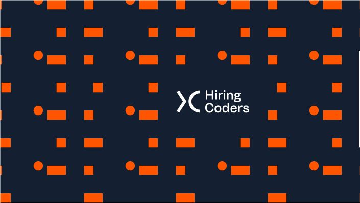

Olá, me chamo Sônia :) Bem vindo(a) ao meu Portfólio! Sou uma pessoa extrovertida, eclética e comunicativa. Sou formada em Ciência da Computação pela Universidade Estadual da Paraíba (UEPB). Atualmente sou Professora de Informática com ênfase em inclusão digital na terceira idade.
Estou participando do bootcamp Hiring Coders para desenvolvimento
Fullstack.

Tenho conhecimento em:
Gosto de desafios e estou aberta a novas possibilidades.
Email para contato:soniagomes1995@gmail.com
Me segue no Github: Clique Aqui